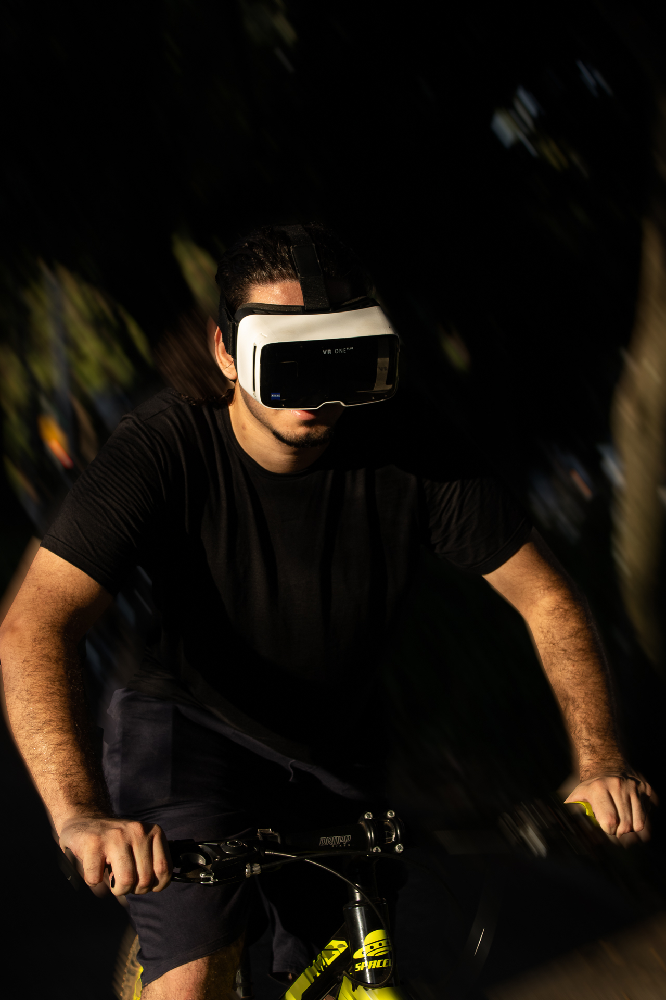
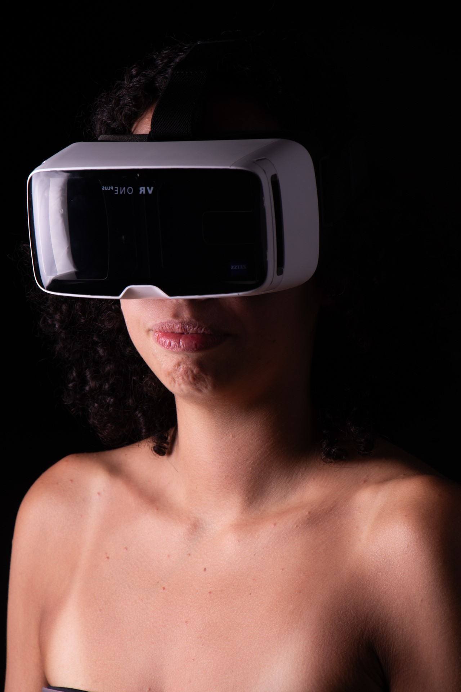
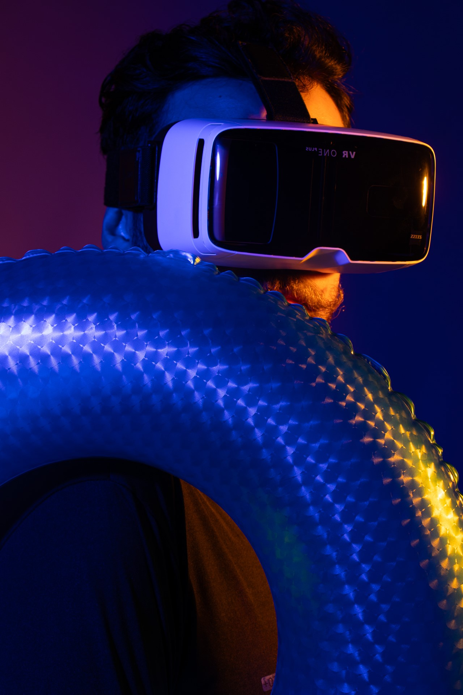

Esteja onde você quiser
A variedade de cenários disponíveis são inúmeras graças a nossa tecnologia de mapeamento e criação de cenarios, o limide das possíbilidades é a sua imaginação.

Sinta a liberdade
Os óculos de realidade virtual para exercícios revolucionam a forma como nos mantemos ativos em casa. Imagine pedalar em uma bicicleta ergonômica, mas ao invés de encarar a parede da sala, você é transportado para trilhas cênicas no campo.
Esporte

Criatividade

Inovação


Saúde

Futuro
O VR ONE PLUS, óculos de realidade virtual voltado para simular ambientes agradáveis são uma das principais tendências. Esses dispositivos serão utilizados para treinamento em diversos contextos, como esportes, educação e medicina, proporcionando imersão total e personalização dos cenários.